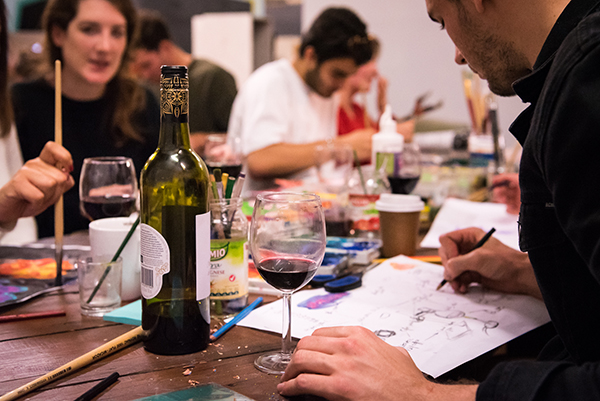
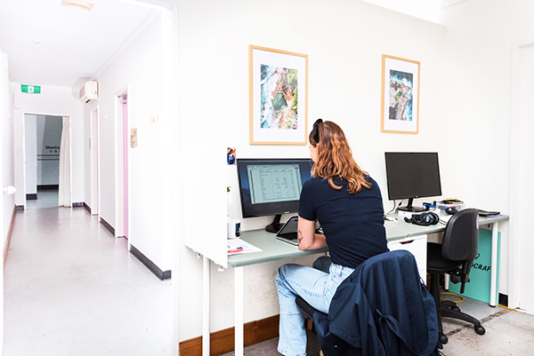
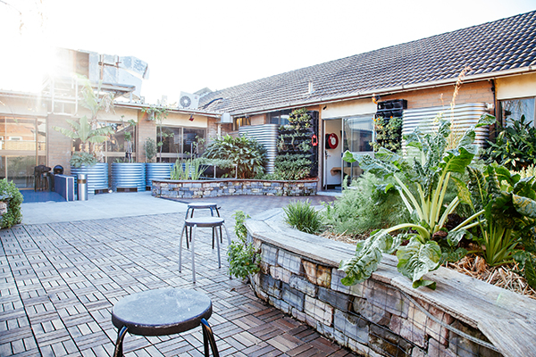
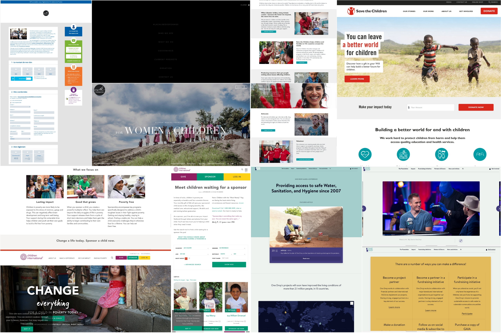
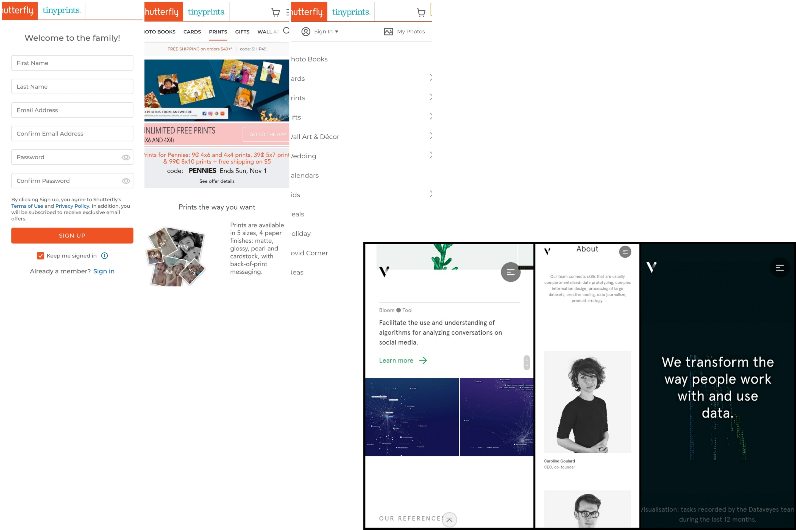
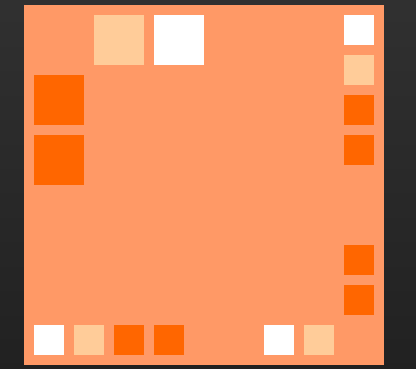
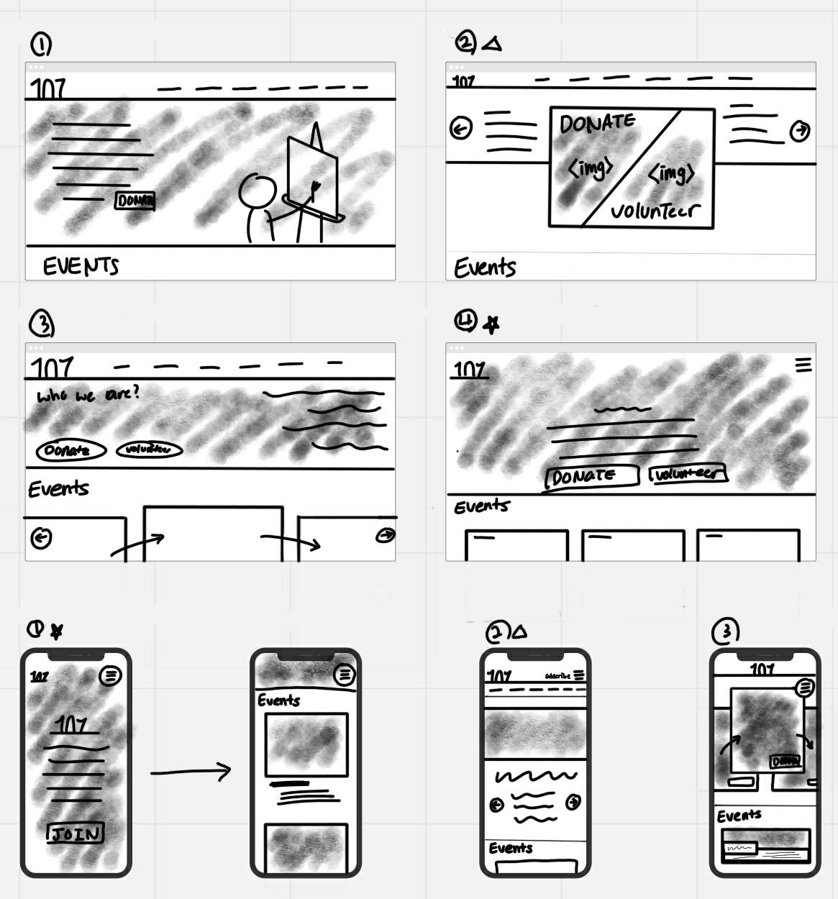
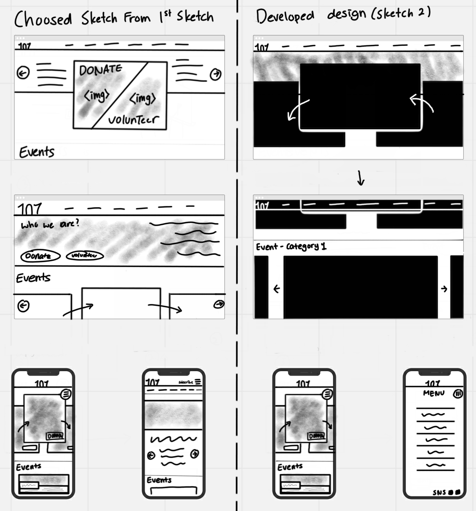

Background information
107 project is an Incoporated Association. They are helping people to live creatively and commiting for culture to develop. And purposes of 107 projects is to inform people how the arts, business and education impacts industies and to change wider community positively.
Research
Adress: 107 Redfer St Redfern NSW 2016 Australia
107 Redfern St
Website: www.107.org.au
phone No.: 0291676999
How to sunscribe/join?: To get newest news from 107 projects, go to https://107.org.au/subscribe/.
Also, go to https://107.org.au/volunteer-program/ to join the events.
There are many volunteer programs such as:
- ART SOMEWHERE PROGRAM COORDINATOR 
- COMMUNICATION ASSISTANCE 
- GARDENING ASSISTANCE 
-A casual role with workshops which is running for 3 hrs. Everything is provided from 107 Projects.Also, needs some experiences relate to arts work.
-Helping the web and graphic design projects.
-Helping gardening. Growing and cultivating plant.
Donations: Donate to 107 Projects is available here https://107.org.au/donate/. Donation account: 107 Projects Incorporated-public Fund 56 103 488 699
They are supporting many artist and create over 650 events.
They have events such as 107 presents, Performance, Exhibition, Talk, Festival, Market, Music, Workshop etc...
User Profiles
Interviewed who have interest in design or create something and who are interested in charity or donations.
- High School Students
Experiences relate on charities:
Not at all, or went to orphanage or sanatorium to help in school. Also, I teached young children on arts in the small centre.
Worries:
Can't find charities easily through website, can find but don't know whether it is reliable. Want to know how volunteering to involve the charities, but I don't have much information for it.
Needs:
They need to know more information on how to donate and how is it work.
Requires:
They requires can find information easily about the method on how the charities work and how can they help them.
As a highschool students(not an adult), have no enough money and time to donate.
- University Students
Experiences relate on charities:
Have been donate through school, such as collecting gold coin or make baby hats to send Africa.
Worries:
Can see many charities through SNS or advertisement during TV and Youtube, but they don't have much information about the charities are able to trust and how the donation work.
Needs:
They needs more information on how donated money used and where they go.
Requires:
They requires photo or authentication that where our donation goes
I am willing to donate, but if I donate, I wonder where my money is going and I can't believe it for few websites(charities).
Overall, High school and University students had difficulties to get deep infromation about charities and how to donate their money. Also, eventhough they want to donate, or volunteering, they were not sure about the site/the charity is trustable or not. Therefore, they want information that where the money goes and how the money spents.
Ideation
Mood Boards
- Examples of PC version of websites 
- Examples of Mobile version of websites 
Sketches
Orange color symbolises creativity. Therefore, the main color will be Orange:
- 
color codes:
#FFCC99 #FF9966 #FF6600 #FFFFFF
First Sketches of web designs. These ideas are from my mood boards. I took specific part that I liked in layout of the website.
- 
Second Sketches. I chosed 2 and 3 from PC website and mobile website. I tried to choose one, but the combining two designs will be better than chosing one. Therefore, I got the rough sketches of my web designs.
- 
Designs
Wireframes

Mockups
PC Version


Mobile Version
References
Australian Charities and Not-for-profits Commision.(2008). Retrieved from https://www.acnc.gov.au/charity/82596b31f3a8fcf0b22d2fe2d5647517#history
One Drop organisation. Retrieved from https://www.onedrop.org/en/get-involved/
Art Factory. Retrieved from
Children International. Retrieved from https://www.children.org/
Save the children. Retrieved from https://www.savethechildren.org.au/
Grant Making Foundation. Retrieved from http://m-foundation.org/
Shutterfly. Retrieved from https://www.sutterfly.com
Dataveyes. Retrieved from https://dataveyes.com/en/
Unsplash. Photo by Bayu Prayuda. Retrieved from https://unsplash.com/photos/4ZVqqDAZD2o
Unsplash. Photo by Kat Yukawa. Retrieved from https://unsplash.com/photos/K0E6E0a0R3A
Unsplash. Photo by Dakota Corbin. Retrieved from https://unsplash.com/photos/xh4mG4cqHGg